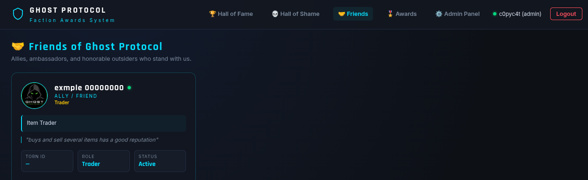
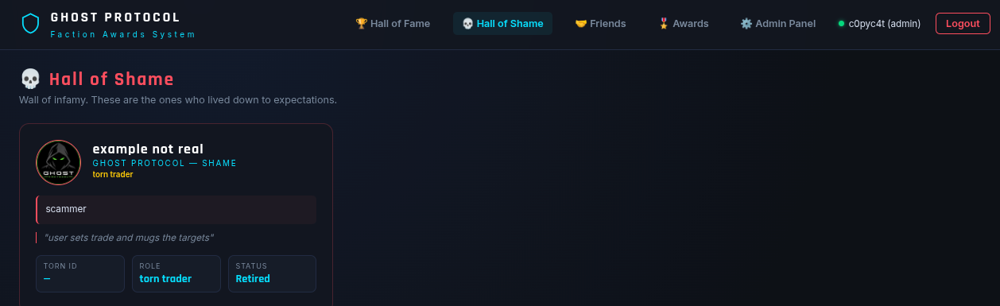
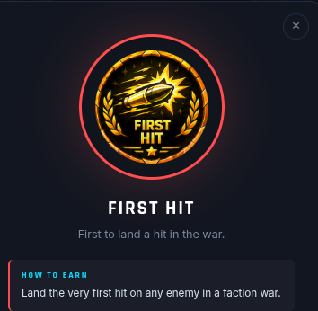
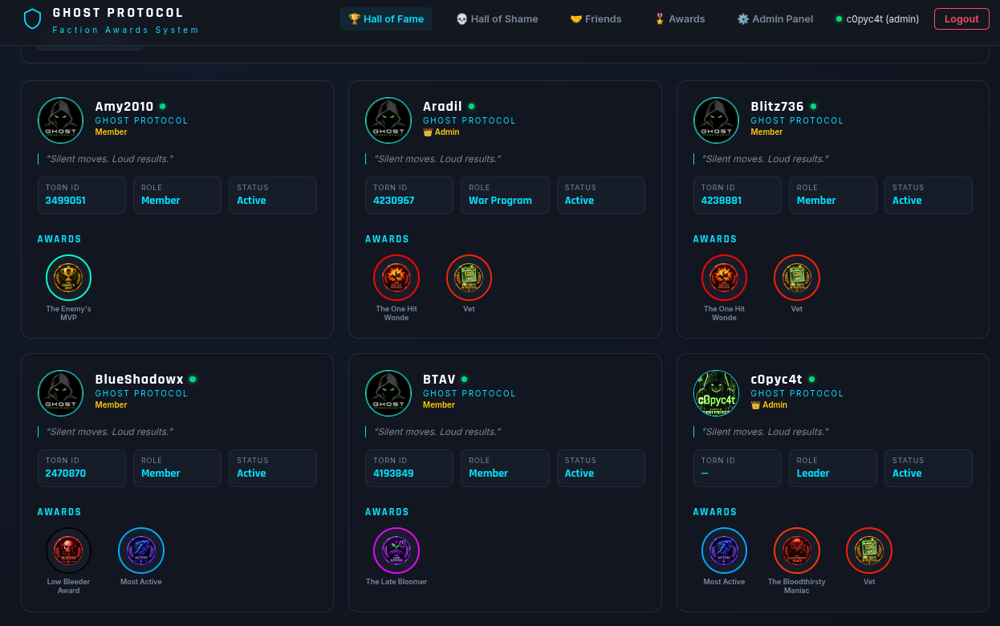
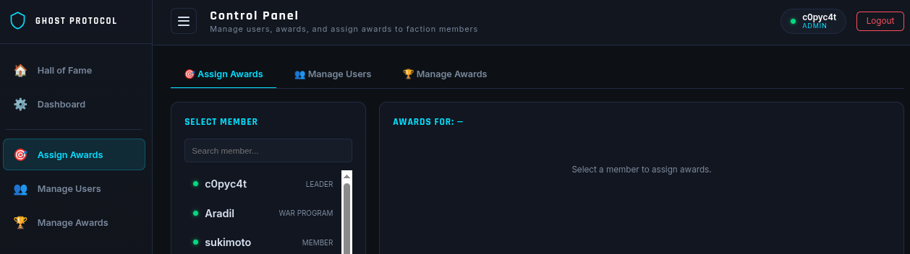
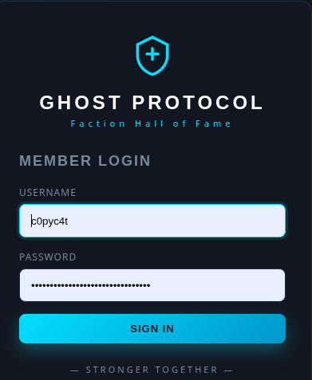

About the project
Ghost Protocol Awards is a faction awards and recognition website designed for Torn City. It gives faction leaders a way to recognize members, track achievements, and showcase their accomplishments.
Featuring custom award icons, a Hall of Fame, a Hall of Shame, and an administration panel for managing faction awards.
Built with Python, Flask, SQLite, HTML, CSS, and JavaScript. Supports both local Python deployment and Docker Compose.
Contact & support
Questions, suggestions, or found a bug? Contact the project author or open an issue on GitHub.
Email: copycat1337x@protonmail.com
GitHub: github.com/copycat1337
Project information
- Project
- Ghost Protocol Awards
- Author
- c0pyc4t
- Game
- Torn City
- Backend
- Python / Flask
- Database
- SQLite
- Deployment
- Python / Docker
- Port
- 41321 (Docker)
Installation
Choose your preferred installation method.
Python
pip install -r requirements.txt
python init_db.py
python app.pyDocker Compose
python init_db.py
docker compose up -d --buildOnce running, open the application at:
Requirements & notes
- Python and pip for local installation.
- Docker and Docker Compose for container deployment.
- SQLite database.
- PNG images for custom award icons.
- Persistent database storage for Docker deployments.
No separate database server is required.
Features
🏆 Faction Awards
Recognize members for their achievements with custom faction awards.
👑 Hall of Fame
Showcase outstanding members and their accomplishments.
💀 Hall of Shame
Keep track of faction recognition and memorable moments.
🖼️ Custom Icons
Personalize awards using your own PNG images.
🔐 Admin Panel
Manage awards and faction recognition through the administration interface.
🗄️ SQLite Database
Lightweight storage with support for existing databases.
Getting started
1. Initialize your database
Run the initialization script to create the database, required tables, and default awards.
python init_db.pyFollow the prompts to create your administrator account.
- Username: At least 3 characters.
- Password: At least 6 characters.
- Confirm your password when prompted.
2. Start the application
python app.py3. Manage your faction awards
Access the web interface to manage your faction's recognition and achievements through the available administration features.
Docker management
# View logs
docker compose logs -f
# Stop application
docker compose down
# Start application
docker compose up -d
# Rebuild application
docker compose up -d --buildCustom award icons
Replace the default award images with your own PNG icons to give your faction a personalized look.
- Format
- PNG
- Resolution
- 256 × 256 pixels recommended
- Directory
static/icons/
static/
└── icons/
├── first_hit.png
├── most_hits.png
├── last_hit.png
├── bleeder.png
├── heals.png
├── active.png
├── biggest_hit.png
└── respect.pngKeep the original filenames when replacing icons so the application can find them correctly.
Application screenshots
Explore the Ghost Protocol Awards interface. Click any image to view it in full size.












Database & security
Ghost Protocol Awards uses SQLite to store application
data in ghost_protocol.db.
- Back up your database before updating application files.
- Keep your database in persistent storage when using Docker.
- Use a unique administrator password.
- Never expose default credentials on a public deployment.
Existing database support allows you to continue using your current faction data, provided the database is compatible with the application.